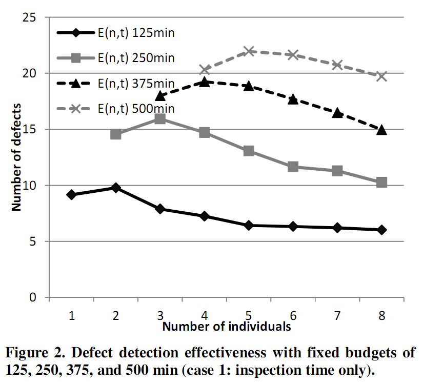

What's in this paper?
- The number of defects found increases as you increase the number of people searching for defects (Linus Law). This leads to increasing costs unless total effort is controlled with effort budgets.
- The number of individuals to use with fixed effort budget is modeled as an optimization problem
- We show that the optimal number of persons depends on the actual defect detection probabilities of the individual defects over time, but also on the size of the effort budget.
- Future work should generalize the optimization also to experience and knowledge of the personnel involved, and methods and tools applied when performing a QA task.
Abstract
Increasing the number of persons working on quality assurance (QA) tasks, e.g., reviews and testing, increases the number of defects detected – but it also increases the total effort unless effort is controlled with fixed effort budgets. Our research investigates how QA tasks should be configured regarding two parameters, i.e., time and number of people. We define an optimization problem to answer this question. As a core element of the optimization problem we discuss and describe how defect detection probability should be modeled as a function of time. We apply the formulas used in the definition of the optimization problem to empirical defect data of an experiment previously conducted with university students. The results show that the optimal choice of the number of persons depends on the actual defect detection probabilities of the individual defects over time, but also on the size of the effort budget. Future work will focus on generalizing the optimization problem to a larger set of parameters, including not only task time and number of persons but also experience and knowledge of the personnel involved, and methods and tools applied when performing a QA task.
Ref
Mäntylä M. V., Petersen K. and Pfahl D., "How many individuals to use in a QA task with fixed total effort? - Defect detection as a function of time" in Proceedings of the 6th International Symposium on Empirical Software Engineering and Measurement (ESEM), pp. 311-314 2012, Lund, Sweden
{kind=link}